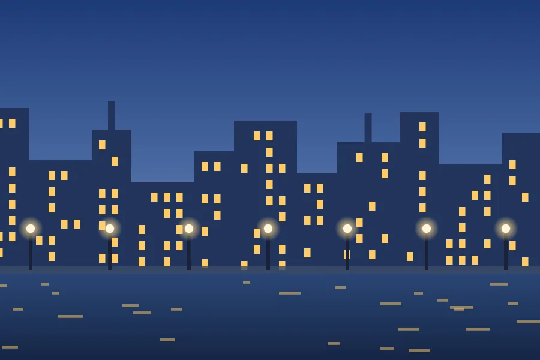
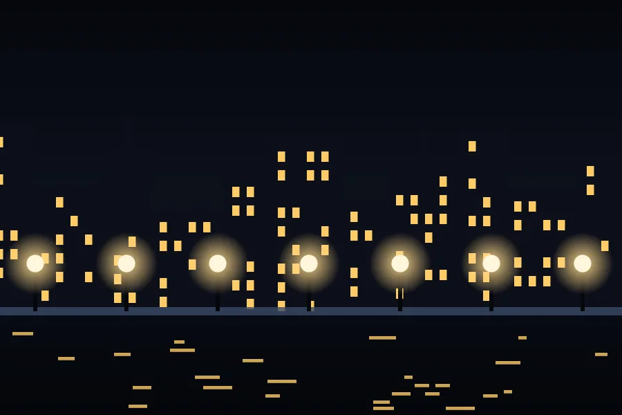
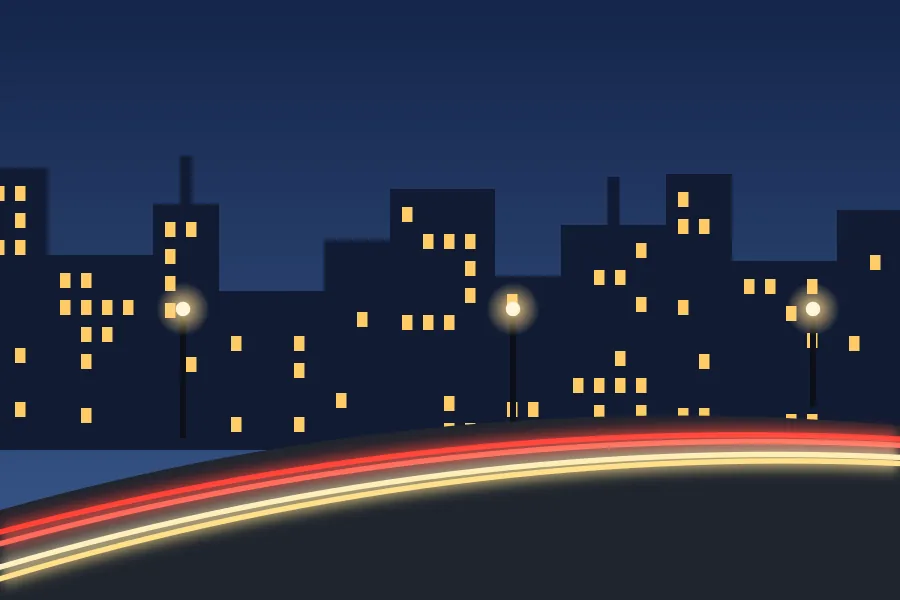
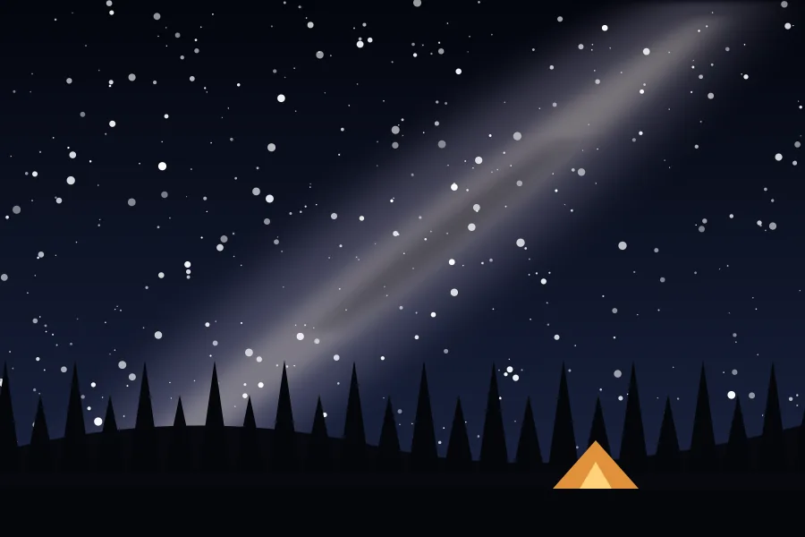

When the light goes, most people put the camera away. That’s a shame, because given time a camera sees more in the dark than you do. Night does bring its own problems. Light is scarce, and the step from a bright lamp to the shadow beside it is enormous. Autofocus starts to struggle as well. This chapter takes them one at a time.
Start in the blue hour


The best time for city pictures is often not the middle of the night but the blue hour, roughly twenty to forty minutes after sunset. The sky still glows deep blue, and the street lights and windows have come on. The two are close in brightness, so one exposure holds both, and the warm lamps sit beautifully against the cool sky (chapter 6). An hour later the sky has turned black and the lamps burn out into white blobs.
With a tripod
A tripod lets you keep the ISO low and the quality high. Set ISO 100 and an aperture around f/8, and let the camera choose a shutter speed of several seconds. Use the self-timer or a remote so you don’t shake the camera. Some cameras and lenses want stabilisation switched off on a tripod, so check yours. Keep an eye on the histogram (chapter 3) and the highlight warning too. Street lights clip easily, and a little less exposure keeps their shape.


Slow shutters turn traffic into light trails, red from the tail lights and white from the headlights. Find a bend or a bridge above a busy road, frame it during the blue hour and try exposures from ten to thirty seconds. Longer exposures give longer, smoother lines.
Without a tripod
Handheld, you need every bit of light you can get. Open the aperture all the way, switch on stabilisation and raise the ISO. Modern cameras give usable pictures at ISO 3200 or 6400, and a bit of grain beats a blurred photo every time. Lean against a wall, breathe out and press gently. Take several frames, because one of them is usually sharper than the rest. Don’t underexpose to keep the ISO down. Brightening a dark picture later adds more noise than a higher ISO would have.
Focusing in the dark
Autofocus needs contrast, so aim it at a bright light or a lit edge, then recompose. If it still hunts, switch to manual focus and use magnification on a distant lamp or a bright star until it’s as small and crisp as it gets (chapter 9). On many lenses infinity sits just before the end of the focus ring, not at the very end.
A first try at the stars
For stars you need real darkness. Get well away from town, pick a night with no moon and give your eyes twenty minutes to adjust. Light pollution maps online show where the sky is darkest. Use your widest lens wide open at ISO 3200, with an exposure of fifteen to twenty seconds. Much longer and the stars start to streak, because the earth turns. A rough guide is 500 divided by the focal length, so about twenty seconds at 24 mm on full frame. In Germany the Milky Way shows best on clear nights from spring to early autumn.
Exercises
Exercises D1–D4. Tick each one off when you’ve tried it. Your ticks stay on this phone or computer.
- D1
Blue hour in steps
Pick one view of your town and photograph it every ten minutes from sunset until it’s fully dark. Choose your favourite moment.
- D2
Light trails
Find a busy road seen from a bridge or a bend. With the camera on a tripod, try exposures from 10 to 30 seconds.
- D3
Your slowest sharp speed
At night, handheld, photograph a lit sign at 1/60, 1/30, 1/15 and 1/8 s. Check each at 100% and note the slowest speed you can hold.
- D4
First stars
On a clear, moonless night away from town, take a 20-second exposure at ISO 3200 with your widest lens wide open. Include a tree or a hill for scale.
Photography Handbook, © 2026 Samskara Photo Club. Text and illustrations are licensed under CC BY-NC-SA 4.0. You may share and adapt them for non-commercial use if you credit the club and share your version under the same licence. Commercial use needs the club’s permission. The club logo is not covered by the licence.